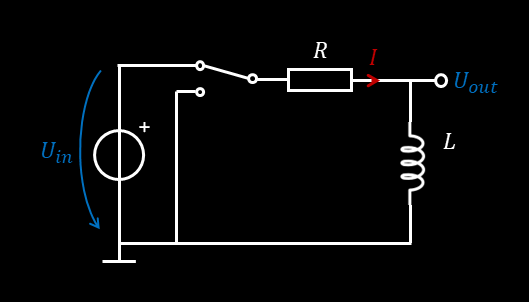

Spulen
Spulen berechnungen▼
Werte mit Massvorsatz eingeben z.B. C = 15μH → Eingabe: 15u (nicht 15uF)
Berechnete Ergebnisse
Spule an Wechselstrom ▼
development in progress
Serie- Parallelschaltung ▼
development in progress
RL-Glied ▼
Laden

Werte mit Massvorsatz eingeben z.B. C = 100nF → Eingabe: 100n (nicht 100nF)